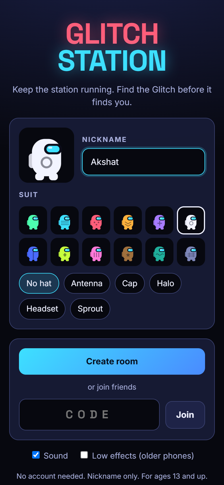
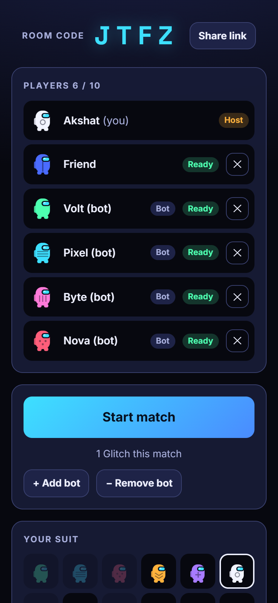
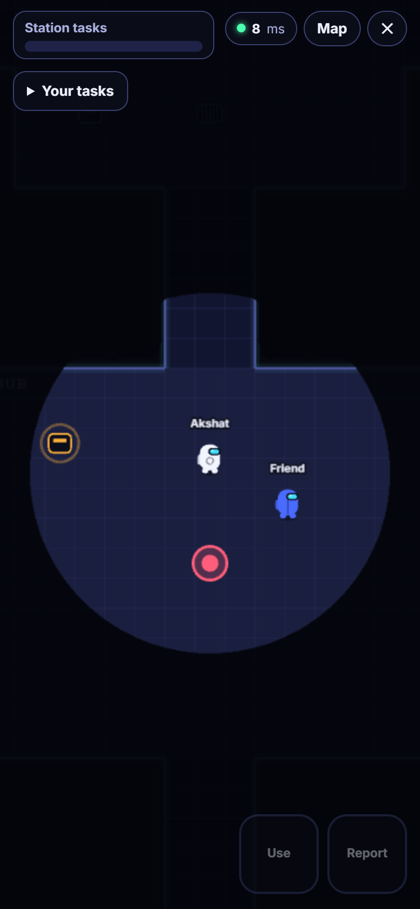
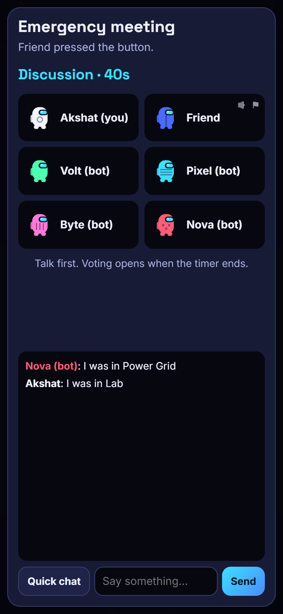
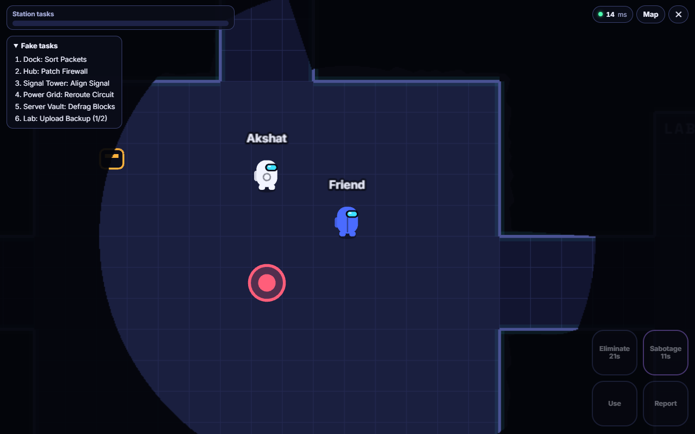
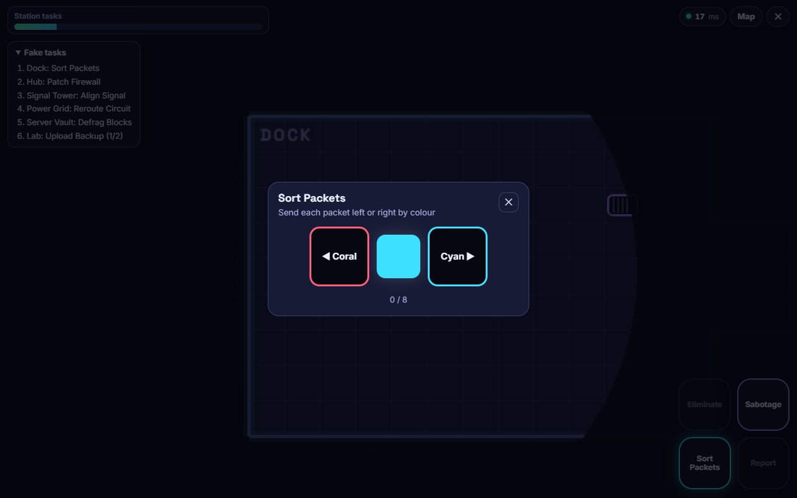
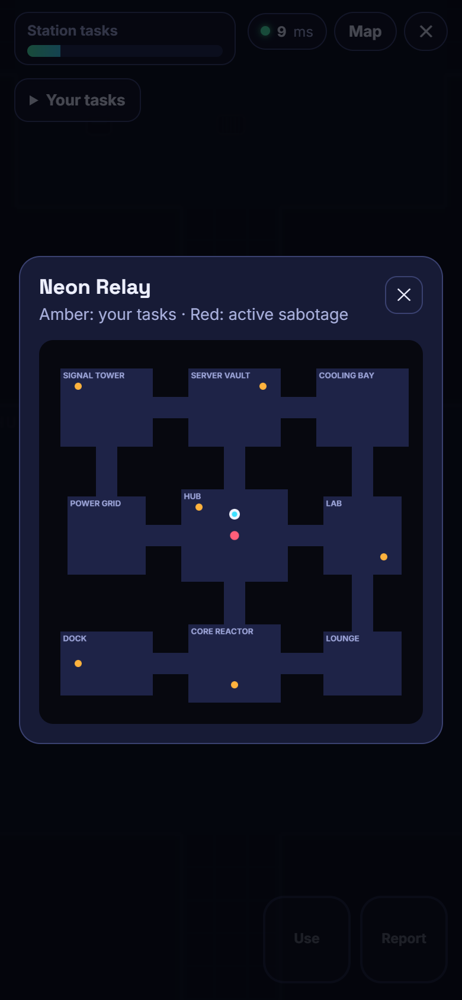
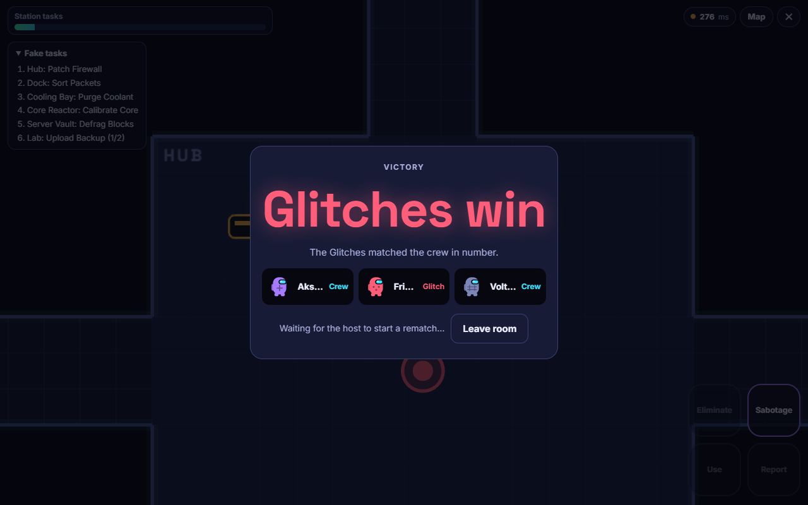

A plain language tour of the whole game: how the pieces fit, how a match runs on the server, how movement stays smooth on a phone, how cheating is blocked, what every file does, how it was tested, and how to change it yourself. Written for you, the owner of the project.
7 PRD phases built (0 to 6)33 automated tests~250 B per snapshot$0 spent
1What you have now
A complete, playable social deduction game: create a room, play a full match on phones or computers, and rematch. Small groups can fill seats with bots.

Home

Lobby with bots

Playing (crew)

Meeting

Playing (Glitch, desktop)

A task minigame

Map

Results
All screenshots are real, taken by automated browser runs against the local build.
Three packages, one deployable Worker. The browser draws; the room server decides; the shared package is the contract both obey.
The rule from your PRD drives everything: the server is the boss. A phone only says what its player is trying to do (move this way, use this task, eliminate that player). The room's Match decides what actually happens and sends each phone only what that player is allowed to know.
3How a match runs
CreateThe home screen calls POST /api/rooms. The Worker picks a random code, asks that code's Durable Object to /init, and retries with a new code if it is taken.
JoinEach phone opens /ws?room=CODE and sends hello with a nickname, suit and a saved token. A known token gets the old seat back; otherwise the player gets a new seat and a new token, stored in local storage.
LobbyThe room broadcasts a lobby message on every change. The host can change settings (clamped by applySettings), kick, add bots, and start once enough players are ready.
Startnew Match(...) assigns roles with assignRoles, deals tasks, and sends each player a private matchStart. Only Glitches get a partner list. A 4 second role reveal plays.
PlayEvery 50 ms Match.step runs bot brains, applies queued movement inputs, ticks sabotage timers, and sends each human a snap containing only what they can see.
ActionsTask, kill, report, sabotage, fix, hold, conduit and chat messages go through Match.handle, which checks role, range, cooldowns and phase before doing anything.
MeetingA report or button press switches to meeting: discussion, voting, result. Votes are tallied by tallyVotes. Afterwards everyone returns to the Hub, bodies are cleared, cooldowns reset.
WincheckWinner runs after every kill, task, eject and departure. The winner and every role go out in over. The host taps Back to lobby and the room is ready for a rematch.
4What I did, step by step
Phase 0 (first session)Monorepo, a Durable Object answering pings, a placeholder map, a ping HUD. Found and fixed the "PING" room code bug (the letter I is banned).
Shared rules firstWrote config, map, movement, tasks, rules and the full protocol in packages/shared, with 21 tests, before any server or client code. Fixed one bug the tests caught: rounding a diagonal joystick made it slightly faster than walking straight.
Match engineWrote match.ts as plain TypeScript with no Cloudflare code, so it can be tested with a fake clock. 12 tests cover hidden roles, vision culling, kill range and cooldown, speed caps, task timing, meltdown, voting and ghost chat.
BotsBots act only through the same messages humans send. Simulated hundreds of bot only matches to check every match ends, then tuned their pace.
Room server and WorkerLobby, reconnect tokens, kicking, host handover, rate limits, room creation API, empty room cleanup alarm, and serving the client files from the same Worker.
ClientNetwork layer, Phaser scene (map drawing, prediction, interpolation, vision), suits with patterns, joystick, HUD, ten minigames, meeting screen, results, synthesised sounds.
End to end checksA Node smoke test with five network players, a nine player load test, and automated browser playthroughs on a phone sized and a desktop sized window covering lobby, tasks, map, meetings, eliminations, results and rematch.
Fixes from testingAdded a missing /api dev proxy, shrank the darkness layer from map size to screen size after a headless renderer crash, made long names wrap on the results screen, added a favicon, let the fake players start their own match.
DocsREADME, this guide, the player walkthrough and a deployment guide.
5Every tool and why
Tool
What it does here
Why this one
TypeScript (strict)
All code. Catches mistakes before running.
PRD choice. Strict mode plus noUncheckedIndexedAccess catches "maybe undefined" bugs common in game code.
npm workspaces
One install links client, server and shared.
Already on your machine; no extra tool.
Phaser 3.90
Draws the station, suits, light, effects; camera.
PRD choice; mature 2D engine that works on phones.
Plain DOM (no framework)
Menus, HUD, minigames, meetings.
Light, fast to load on phones, and accessible (real buttons and text). A tiny h() helper keeps it readable.
Vite 6
Dev server with instant reload and a proxy to the Worker; production bundler.
PRD choice.
Cloudflare Workers + static assets
Serves the page and routes API and sockets.
Free, global, nothing to manage. Static assets replace a separate Pages deploy.
Durable Objects (SQLite backed)
One live server per room.
PRD choice: "one room equals one object". SQLite backed is the kind the free plan allows.
Wrangler 4
Runs the Worker locally with real Durable Objects; deploys.
Cloudflare's official tool.
WebAudio
Every sound effect, generated from tones.
No audio files, no licences, tiny.
Vitest 5
Unit and simulation tests.
PRD choice; runs TypeScript directly.
ESLint 9 + typescript-eslint
Lint.
PRD asks for lint after every phase.
Playwright core + Edge
Drove two real browsers through matches to take screenshots and catch UI bugs.
Used only from a scratch folder during the build; not part of the project.
The Neon Relay as a 54 by 54 tile grid built from nine room rectangles and corridors; doors per room; task, fix, button and conduit positions; lineOfSight, canSee, findPath.
movement.ts
stepMovement: the one movement step both client and server run, so prediction matches the server exactly.
tasks.ts
The eight tasks: name, type, room, stations, whether finishing is visible to others.
rules.ts
Settings and their ranges, Glitch count, role and task dealing, vote tally, win check, chat and name filters, quick chat sentences.
messages.ts
Every message type both ways and parseClientMessage, which rejects anything malformed.
cosmetics.ts
12 suit colours each paired with a pattern, 6 hats, bot names.
Each snapshot says where the server put you and the last input it applied (ack). The client starts from that position and replays any inputs the server has not seen yet. Because both sides run the identical step, the result normally matches exactly and you never notice. If it does not (a locked door, a conduit), you are corrected.
pending = pending.filter(p => p.seq > snap.ack);
let pos = snap.me;
for (const p of pending) pos = stepMovement(pos, p.dx, p.dy, blocked);
3. Interpolation: others glide
Other players are drawn 100 ms in the past, blended between the two snapshots around that moment, so they move smoothly even though updates arrive in steps.
Vision
The server only puts a player in your snapshot if they are within your vision radius and lineOfSight is clear. On screen, the scene casts 180 rays from your eyes to build the lit shape and darkens everything else, so what you see matches what the server tells you.
8Anti cheat and safety
Threat (PRD section 11)
How it is blocked
Where
Reading roles from network data
Crew get no role info at all; Glitches get only partners. A test scans all crew traffic for the word "glitch".
sendMatchStart, tests
Seeing through walls
Players and bodies outside vision are never sent.
Match.snapshot
Speed hacks
Server applies at most 3 inputs per tick, each a fixed step; queue capped at 12. A test floods 200 inputs.
simulateMovement
Fake eliminations
Role, alive, phase, 1.2 tile range and cooldown are checked server side.
handle("kill")
Instant tasks
Must be near the station when starting and finishing, and at least 1.2 s apart (8 s for upload stages).
handle("taskDone")
Junk or oversized messages
Every frame is parsed and validated; over 1 KB is dropped.
parseClientMessage
Spam and flooding
Per connection message budget; chat budget; room creation limit per IP.
room.ts, index.ts
Abusive chat
Word filter, 80 characters, quick chat built on the server from ids, mute, report, host kick, living cannot chat outside meetings.
rules.ts, match.ts
Young players
Nickname only, no accounts, no direct messages, private rooms only.
Whole design
Script injection through names or chat
All player text goes into the page as text, never as HTML.
ui/*
9Decisions I made
Decision
Why
Serve the client from the Worker instead of Pages
One deploy, one address, no env file, no cross site setup. Pages still works (see the deployment guide).
Standard WebSockets instead of the hibernation API
A room keeps its lobby and match in memory; hibernation could wipe that while players sit in the lobby. Rooms with nobody connected are evicted and cost nothing.
Map defined in code, not Tiled
Client and server must share the exact collision grid; code makes that automatic and testable. A Tiled import can replace it later.
Bots pulled forward from phase 9
So you and one friend can play a real match now.
Practice mode allows 3+ players
Same reason. Normal rooms still need 5, per the PRD.
Minigames in HTML, not Phaser
Big touch targets, accessible, simple to build and change.
Sounds synthesised
The PRD allows CC0 sounds; generating them avoids files and licences entirely.
Analytics as JSON log lines
Free and visible in the Cloudflare dashboard; no extra service.
Doors lock by turning door tiles into walls
Movement, sight and bot paths all respect it with no special cases.
10Problems I hit
"PING" was an invalid room
Phase 0's default room used a banned letter. Fixed and guarded by a test.
Diagonals were too fast
Rounding 0.707 up to 0.71 made diagonal speed 0.4% over the limit. A test caught it; values are now truncated.
Unicode in a regex
The chat filter's character range was written out as raw invisible characters and broke the parser. It is now built from an escaped string.
Bot balance
First tuning: crew bots won 30 of 30. Second: Glitch bots won most. Final: depends on player count. Real balance is a phase 7 job with humans.
Create room did nothing in dev
The Vite proxy only forwarded /ws. Added /api.
Browser crash after 5 minutes
In headless software rendering, the full map darkness layer was too heavy. Memory checks showed no leak; the layer now covers only the screen, which also helps older phones.
Edit numbers in packages/shared/src/config.ts (speeds, vision, cooldowns, timers) or defaults in DEFAULT_SETTINGS in rules.ts. Run npm test.
Add a task
Define itAdd its id to TaskId and an entry to TASKS in tasks.ts, with a room and anchor.
Build the minigameWrite a function in minigames.ts that calls done() when solved, and add it to GAMES. TypeScript will tell you if you forget.
TestThe map test checks the station is on the floor in the right room.
Add a message
Type it in messages.ts, validate it in parseClientMessage, handle it in Match.handle (or room.ts for lobby actions), send it from the client, and add a test.
Change the map
Room sizes are in ROOM_DEFS and corridors in CORRIDORS in map.ts. Run the tests: they check every room is reachable and every station sits on floor.
14What comes next
Item
Why it matters
Deploy and play on real phones
The PRD's done checks need real 4G play.
Batch two movement steps per message
Halves WebSocket messages, which count against the free daily limit.
Phase 7: Sentry, feedback button, end of match survey, admin page
Needed before the soft launch and the spend gate.
Tune toward a 45 to 55% crew win rate
Use match_finished events from real groups.
Phase 8: identity and NFT cosmetics
Waits on chain and wallet decisions shared with Lane Siege.
Smarter bots, Tiled map, special roles
Later polish and phase 9.
Known limits: rooms reset on every deploy; nothing is stored between matches; the client UI has browser checks but no unit tests.
15Glossary
Term
Meaning
Authoritative server
The server decides what is true; clients only ask.
Durable Object
A tiny server Cloudflare creates on demand and always finds by name; here, one per room.
Tick
One 50 ms step of the simulation.
Snapshot
What a player receives each tick: what they can see and their own state.
Prediction / reconciliation / interpolation
Move yourself instantly / accept the server's correction / draw others slightly in the past.
Culling
Leaving out of a message anything the player should not know.
Seat and token
Your place in a room, and the secret saved on your device that gets it back after a drop.
Static assets
The built HTML, CSS and JS files the Worker hands to browsers.